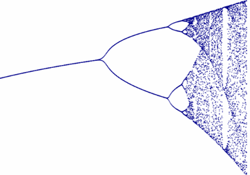
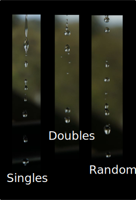

Bifurcation
Bifurcation means splitting into two parts: "bi" (two), and "furca" (fork).
As some functions evolve they suddenly split into two!
First we will need a function:
rx(1−x) is a good one.
x is the input value, and r is a value we want to investigate.
We will calculate the function over and over again, each time using the result as the new x value.
Let us try r=2, and start with x=0.2:
2 × 0.2(1−0.2) = 2 × 0.2 × 0.8 = 0.32
Now with the new x value: 2 × 0.32 × 0.68 = 0.4352
And once again: 2 × 0.4352 × 0.5648 = 0.49160...
And again: 2 × 0.49160... × 0.50840... = 0.49986...
And again: 2 × 0.49986... × 0.50014... = 0.50000...
We see it is settling to 0.5
But is not always so simple. Try some other r values here:
What do you notice?
- How about when r is around 3.2 ? It jumps between two values.
- And around r = 3.5 it jumps between four values.
- And what is the story around r = 3.7 ? It seems like complete chaos.
- But then try around 3.84: it briefly settles down, then goes crazy again.
We need to investigate more!
So try here. Same idea as above, but a lower plot keeps track of the last few values achieved at each r-value. It needs your help to make the plot:
Here is a closer look at it, notice the "forks" (where the name bifurcation comes from), and also notice how it goes from order to chaos and sometimes back again:

The change between order and chaos is also seen in nature.
For example populations of animals can be steady, or show this "one year many, next year few" pattern, or be just very chaotic.

Dripping Taps
Get a tap dripping.
It can be steady (drip, drip, drip), but at a different flow rate you may get a "double drip" (like when r is around 3.2 above).
Change the flow again and the drips can seem random.
Like in these photos:
Mandelbrot Set
There is a relationship between the bifurcation diagram and the Mandelbrot set. You may like to investigate that!
More
There are more types of bifurcation in mathematics!
And there is a whole lot more to learn in this really interesting subject called Dynamical Systems.